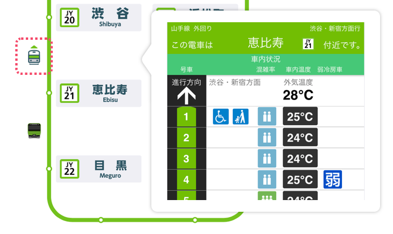
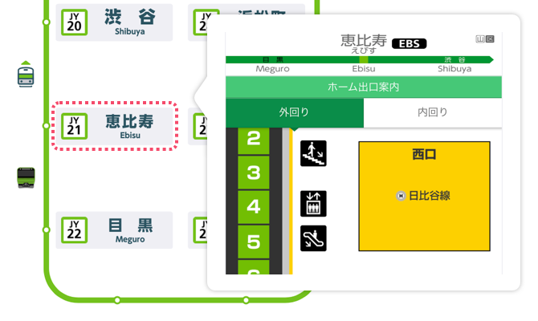
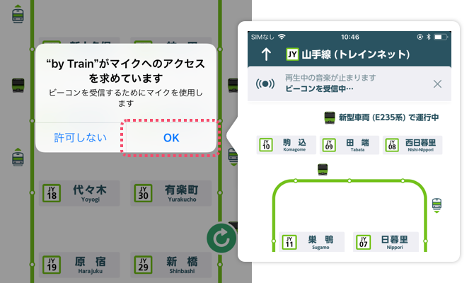
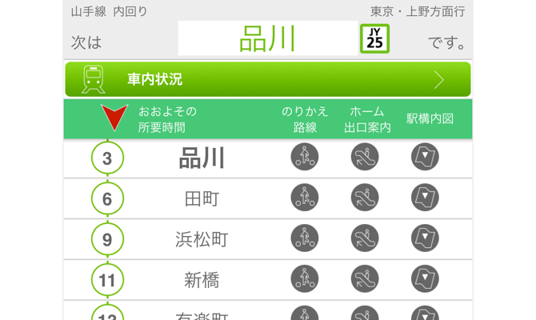
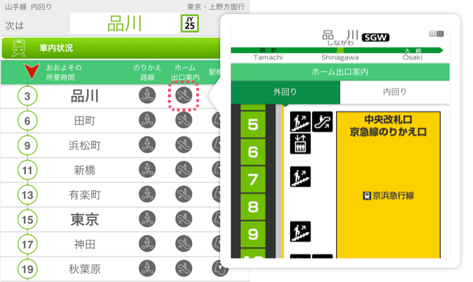

1. 車内状況の確認
をタップするとその電車の「車内状況」が確認できます。

2. 列車走行位置、ホーム出口案内の確認
駅名をタップすると「ホーム出口案内」が確認できます。

3. 山手線にご乗車のとき
3-1. マイクを ON にしてをタップすると、乗っている車両の情報取得を開始します。
※一部の Android 端末では、トレインネット機能・トレすごの山手線チャンスをご利用できない場合がございます。

3-2. 車両から情報が取得されると、ご乗車の列車の停車駅と所要時間が一覧で表示されます。

3-3. さらに、各駅の乗換案内やホーム出口案内、駅構内図も見ることができます。
